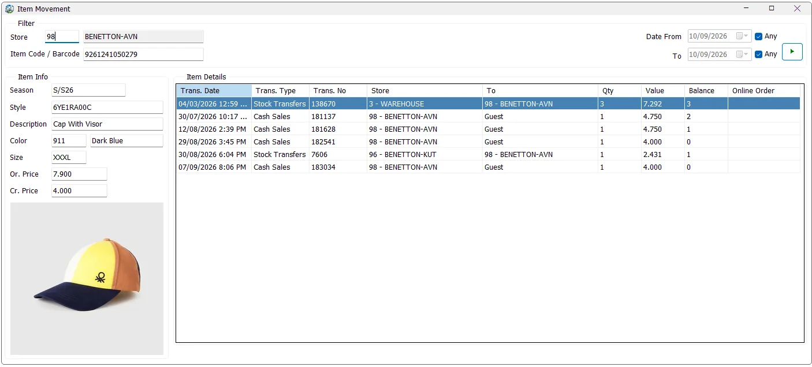

Item Movement
Item Movement is the transaction history for one inventory item. It brings purchases, purchase returns, stock transfers, sales and returns, stock depreciation, stock adjustments and the opening balance into one chronological view so users can trace how an item's quantity moved through IMS.

Find the item
Enter an Item Code, the item's main Barcode, or an alternate barcode, then run the search. IMS resolves the value to one inventory Item Code before loading the movement history.
If the item is found, the Item Info panel shows its Season, Style, Description, Color Code, Color Name, Size, Original Price and Current Price, together with the stored Style + Color product image when available.
All stores or one store
The Store filter is optional. Leave Store blank to review the item's history across all accessible locations. Enter a Store ID to trace the item specifically through that location.
| Store selection | Behavior |
|---|---|
| No Store selected | Shows the item's movements across stores. Because there is no single location balance to calculate, the Balance and Online Order columns are hidden. |
| Specific Store selected | Shows movements relevant to that location, including transfers sent from or received by the store. IMS also shows the running Balance and Online Order columns. |
If the logged-in user has access to only one center/store, IMS automatically fills that location and locks the Store ID field.
Filter by date
Date From and To each have an Any option. Leave both as Any to review the complete recorded history. Clear either Any checkbox to apply that boundary to the movement date.
Transactions included
IMS collects the item's history from the inventory and sales transaction tables and combines the rows into one date/time sequence.
| Movement | Qty treatment | What Store / To represent |
|---|---|---|
| Purchase | Positive receipt quantity. | Store is the receiving location. |
| Purchase Return | Shown as a negative receipt quantity. | Store is the location returning the stock. |
| Stock Transfer | The transfer quantity is shown on the transaction row; direction is understood from Store and To. | Store is the source and To is the destination. |
| Cash / Credit Sale | Sale quantity is positive; sales returns are represented as negative quantities in the transaction data. | Store is the selling location; To contains the customer name when available, otherwise it may be blank/Guest depending on the transaction. |
| Stock Depreciation | Recorded write-off quantity; it reduces the selected store's running balance. | Store is the depreciating location. |
| Stock Adjustment | Uses the signed adjustment quantity: positive adds stock and negative reduces it. | Store is the adjusted location. |
| Opening Balance | Uses the item's recorded first/opening quantity. | Store is the location where the opening quantity was established. |
Item Details columns
| Column | Meaning |
|---|---|
| Trans. Date | Transaction date and time. |
| Trans. Type | Purchase, Purchase Return, Stock Transfer, sale/return type, Depreciation, Stock Adjustment or Opening Balance. |
| Trans. No | The source transaction/voucher number. |
| Store | The store/location associated with the movement; for transfers this is the sending location. |
| To | Transfer destination or customer, depending on the transaction type. |
| Qty | Transaction quantity using the source transaction's sign/direction rules. |
| Value | Transaction value. The source differs by transaction type: purchase/transfer local value, sales net value, inventory cost for depreciation/adjustments, or opening quantity × opening average cost. |
| Balance | Running quantity for the selected Store. Visible only when one Store is selected. |
| Online Order | Online-order reference when the underlying inventory movement carries one. Visible only in the selected-Store view. |
How the Store Balance is calculated
When a Store is selected, IMS sorts the combined movement history by transaction date and time and calculates a running quantity:
| Movement relative to selected Store | Balance effect |
|---|---|
| Opening Balance | Adds the opening quantity. |
| Purchase | Adds received quantity. |
| Purchase Return | Uses its negative quantity, therefore reducing balance. |
| Stock Adjustment | Adds the signed adjustment quantity. |
| Sale | Subtracts sold quantity. |
| Sales Return | The transaction quantity is negative, so subtracting it adds the returned quantity back. |
| Stock Depreciation | Subtracts the depreciated quantity. |
| Stock Transfer sent from the Store | Subtracts transfer quantity. |
| Stock Transfer received by the Store | Adds transfer quantity. |
Value visibility
The Value column is cost-sensitive. Users without permission to view COGS/cost information do not see it. The movement quantities and transaction history remain available according to normal access rights.
Typical tracing workflow
- Enter the Item Code or scan a barcode.
- Leave Store blank to inspect the complete cross-store journey, or enter a Store ID to calculate that store's running balance.
- Leave Date From/To as Any for the complete history, or limit the required period.
- Run the search.
- Confirm the item identity from Season, Style, Color, Size, prices and image.
- Read the movement grid chronologically to trace purchases, transfers, sales, returns and stock corrections.
- When investigating a store discrepancy, use the Balance column to identify the transaction after which the quantity changed unexpectedly.
Reading a transfer in Item Movement
For a Stock Transfer, read Store → To as the movement direction. In a selected destination-store view, a transfer from another store increases Balance. A later sale from the selected store reduces it. This makes the screen useful for following the physical path of a single SKU from receiving through transfer and sale.